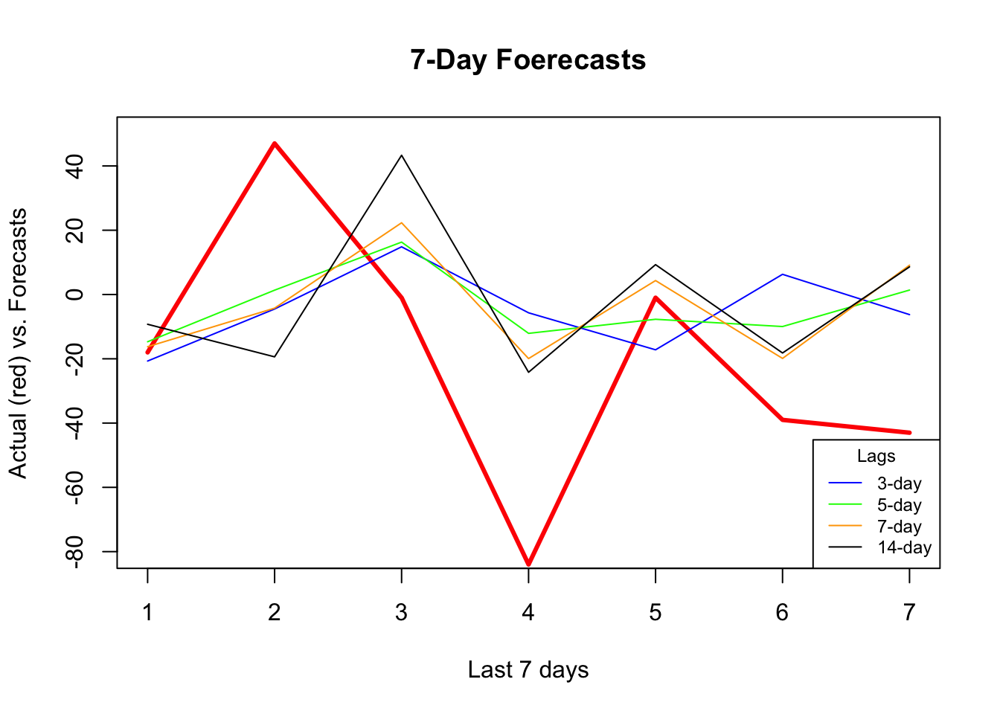
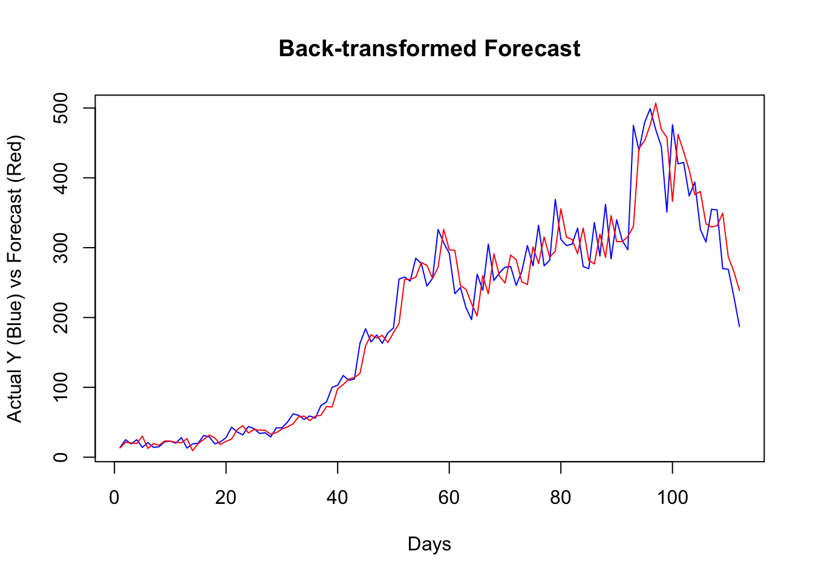

Chapter 24 Random Forest
We will utilize embedding methods for direct forecasting with Random Forests. We choose the random forests algorithm because it does not need an explicit tuning by a grid search. In the practice, however, we can still search for the number of trees and the number of variables randomly sampled as candidates at each split.
Let’s get our COVID-19 data:
library(tsibble)
library(fpp3)
load("~/Dropbox/ToolShed_draft/toronto2.rds")
day <- seq.Date(
from = as.Date("2020/03/01"),
to = as.Date("2020/11/21"),
by = 1
)
tdata <- tibble(Day = day, data[, -1])
toronto2 <- tdata %>%
as_tsibble(index = Day)
toronto2## # A tsibble: 266 x 8 [1D]
## Day cases mob delay male age temp hum
## <date> <dbl> <dbl> <dbl> <dbl> <dbl> <dbl> <dbl>
## 1 2020-03-01 4 -0.0172 36.8 0.75 55 -4.2 65.5
## 2 2020-03-02 6 -0.0320 8.5 1 45 3.8 84
## 3 2020-03-03 10 -0.0119 15 0.7 54 2.3 90
## 4 2020-03-04 7 0.0186 25.7 0.286 50 3.35 71
## 5 2020-03-05 7 0.0223 21 0.429 48.6 1.2 63.5
## 6 2020-03-06 10 -0.00626 13.1 0.5 36 0.04 75
## 7 2020-03-07 8 0.0261 10.4 0.5 46.2 -1.65 54
## 8 2020-03-08 10 0.0273 11.6 0.9 50 6.3 56
## 9 2020-03-09 18 -0.0158 8.89 0.611 35.6 12.5 55
## 10 2020-03-10 29 -0.0521 9.69 0.448 41.7 5.15 79
## # … with 256 more rowsAs before, the data contain the first wave and the initial part of the second wave in Toronto for 2020. It is from Ontario Data Catalogue sorted by episode dates (Day), which is the date when the first symptoms were started. The mobility data is from Facebook, all_day_bing_tiles_visited_relative_change, which is reflects positive or negative change in movement relative to baseline. The other variables related to tests are delay, which is the time between test results and the episode date, the gender distribution of people is given by male, age shows the average age among tested people any given day. The last two variables, temp and hum, show the daily maximum day temperature and the average outdoor humidity during the day, respectively.
Except for age all other variables are non-stationary. We will take their first difference and make the series stationary before we proceed.
df <- toronto2 %>%
mutate(
dcases = difference(cases),
dmob = difference(mob),
ddelay = difference(delay),
dmale = difference(male),
dtemp = difference(temp),
dhum = difference(hum)
)
dft <- df[, -c(2:5, 7, 8)] #removing levels
dft <- dft[-1, c(1, 3:7, 2)] # reordering the columnsFirst, we will use a univariate setting for a single-window forecasting, which is the last 7 days.
24.1 Univariate
We will not have a grid search on the random forest algorithm, which could be added to the following script:
library(randomForest)
h = 7
w <- 3:21 # a grid for window size
fh <- matrix(0, length(w), h)
rownames(fh) <- w
colnames(fh) <- 1:h
for (s in 1:length(w)) {
dt <- as.data.frame(embed(as.matrix(dft[, 2]), w[s]))
test_ind = nrow(dt) - (h)
train <- dt[1:test_ind,]
test <- dt[-c(1:test_ind),]
y <- train[, 1]
X <- train[, -1]
for (i in 1:h) {
fit <- randomForest(X, y)
fh[s,] <- predict(fit, test[, -1])
y <- y[-1]
X <- X[-nrow(X),]
}
}
fh## 1 2 3 4 5 6 7
## 3 -15.9289667 8.210767 18.96167 -5.951248 -5.422900 15.895133 -0.1105333
## 4 -9.4216333 -5.586133 22.32650 -3.761310 -0.444900 -1.894233 3.0504000
## 5 -1.2438667 -5.541267 33.62136 -9.063767 -1.794433 -9.748733 16.4341667
## 6 4.7844667 -9.002667 23.25693 -11.409200 13.223233 -12.937933 16.8046000
## 7 2.0243667 -16.547167 30.16763 -14.590333 13.503500 -22.113100 12.5927667
## 8 4.5474333 -24.117567 44.26567 -11.486767 15.114567 -16.128367 27.1569667
## 9 -3.6966667 -37.467433 66.23103 -19.467967 14.779500 -23.198767 17.4873000
## 10 -6.9036333 -35.680600 70.18703 -25.370200 14.147567 -21.051467 12.9969667
## 11 0.9950333 -29.910033 63.41630 -25.773000 19.443467 -19.698400 15.1844000
## 12 2.2359667 -29.181833 61.65840 -24.491733 16.817867 -15.552300 13.5540667
## 13 -1.3064667 -31.045933 54.64903 -23.087767 11.724267 -9.906600 12.4120333
## 14 -3.4698333 -28.736000 56.46040 -22.205600 18.486700 -11.990533 12.7867333
## 15 -2.2694667 -35.102067 48.32880 -23.826067 15.043133 -12.621267 11.3795333
## 16 -16.2784333 -36.768100 56.63847 -23.272867 13.546533 -13.983167 12.9414000
## 17 -9.9887667 -32.262267 59.45367 -27.335133 14.573567 -16.577200 10.6857000
## 18 -9.5311333 -35.403833 59.50233 -24.536067 14.964033 -12.222600 10.9897000
## 19 -8.8701000 -31.395367 59.98397 -25.205933 15.632000 -11.702167 11.3733333
## 20 -7.2084667 -33.882567 60.24880 -24.806667 11.053000 -14.878267 11.8647000
## 21 -5.0307000 -30.680933 57.72057 -22.284033 9.395700 -12.918233 17.5600667We can now see RMSPE for each row (window size):
actual <- test[, 1]
rmspe <- c()
for (i in 1:nrow(fh)) {
rmspe[i] <- sqrt(mean((fh[i,] - actual) ^ 2))
}
rmspe## [1] 42.88109 43.62019 45.10958 44.67562 44.42396 51.51704 53.69373 52.30613
## [9] 50.69759 50.35036 49.64989 49.69725 49.21206 50.70492 49.04766 50.63225
## [17] 49.83291 50.21522 50.58987which.min(rmspe)## [1] 1And, if we plot several series of our forecast with different window sizes:
plot(
actual,
type = "l",
col = "red",
ylim = c(-80, 50),
ylab = "Actual (red) vs. Forecasts",
xlab = "Last 7 days",
main = "7-Day Foerecasts",
lwd = 3
)
lines(fh[1,], type = "l", col = "blue")
lines(fh[2,], type = "l", col = "green")
lines(fh[5,], type = "l", col = "orange")
lines(fh[12,], type = "l", col = "black")
legend(
"bottomright",
title = "Lags",
legend = c("3-day", "4-day", "7-day", "14-day"),
col = c("blue", "green", "orange"),
lty = c(1, 1, 1, 1, 1),
bty = "o",
cex = 0.75
)
As the window size gets larger, the forecast becomes increasingly smooth missing the short term dynamics. Another observation is that, although “blue” (3-day window) has the minimum RMSPE, it is not able to capture ups and downs relative to 7-day or 14-day windows.
24.2 Multivariate
Can we increase the prediction accuracy with additional predictors?
library(randomForest)
h = 7
w <- 3:14 # a grid for window size
fh <- matrix(0, length(w), h)
rownames(fh) <- w
colnames(fh) <- 1:h
for (s in 1:length(w)) {
dt <- as.data.frame(embed(as.matrix(dft[, -1]), w[s]))
test_ind = nrow(dt) - (h)
train <- dt[1:test_ind,]
test <- dt[-c(1:test_ind),]
y <- train[, 1]
X <- train[, -1]
for (i in 1:h) {
fit <- randomForest(X, y)
fh[s,] <- predict(fit, test[, -1])
y <- y[-1]
X <- X[-nrow(X),]
}
}
fh## 1 2 3 4 5 6 7
## 3 -20.695567 -4.5049667 14.84297 -5.690667 -17.205467 6.283600 -6.253233
## 4 -22.160900 0.4831333 18.89210 -9.120733 -14.048933 1.709833 -3.402200
## 5 -14.697433 1.3508000 16.30703 -12.084200 -7.699533 -9.964600 1.386367
## 6 -12.164533 3.3715667 23.96313 -10.992333 1.389833 -12.069233 1.865433
## 7 -16.246600 -4.2417000 22.32050 -19.930567 4.339667 -19.883567 9.118133
## 8 -5.139800 -13.9180333 27.48713 -12.584567 3.452567 -12.517267 16.420967
## 9 -13.791667 -23.8656000 48.57240 -21.052433 5.926867 -21.024567 10.555300
## 10 -10.808467 -18.0650667 49.80003 -23.516467 6.458200 -20.362567 10.492900
## 11 -8.550467 -18.9010333 48.35323 -24.802867 12.480467 -20.773100 11.063533
## 12 -6.625767 -18.0023667 44.87017 -23.751400 11.101867 -20.616233 7.235433
## 13 -5.115400 -17.9041000 41.61020 -27.285133 9.159433 -22.168267 11.793233
## 14 -9.258867 -19.3939667 43.32397 -24.189367 9.289267 -18.191633 8.611467actual <- test[, 1]
rmspe <- c()
for (i in 1:nrow(fh)) {
rmspe[i] <- sqrt(mean((fh[i, ] - actual) ^ 2))
}
rmspe## [1] 42.60604 40.67165 38.58989 38.97738 38.52230 44.78534 45.82378 44.38235
## [9] 44.41539 43.25450 42.76110 43.47264which.min(rmspe)## [1] 5plot(
actual,
type = "l",
col = "red",
ylim = c(-80,+50),
ylab = "Actual (red) vs. Forecasts",
xlab = "Last 7 days",
main = "7-Day Foerecasts",
lwd = 3
)
lines(fh[1,], type = "l", col = "blue")
lines(fh[3,], type = "l", col = "green")
lines(fh[5,], type = "l", col = "orange")
lines(fh[12,], type = "l", col = "black")
legend(
"bottomright",
title = "Lags",
legend = c("3-day", "5-day", "7-day", "14-day"),
col = c("blue", "green", "orange", "black"),
lty = c(1, 1, 1, 1, 1),
bty = "o",
cex = 0.75
)
It seems that additional predictors do increase the accuracy. Again, relative to the best model (5-day window) our 7-day window correctly captures most ups and downs in the forecast. Now, a visual inspection shows that all RMSPE’s are lower than the univariate forecasts. We would conclude that this is because of the new predictors, specially mobility, temperature, and humidity. As a side note, we need to test if those differences are statistical significant or not (i.e. Diebold-Mariano Test).
24.3 Rolling and expanding windows
A seven-day window is not enough for a reliable judgment on the forecast accuracy. One way to deal with this issue is to use rolling or expanding windows to predict the next h days. The following example shows a 1-day-ahead forecast with varying lags for embedding.
library(randomForest)
l = 3:10 # lags for embedding
ws = 150 # size of each rolling window
rmspe <- c()
all_fh <- vector(mode = "list", length = length(l))
all_y <- vector(mode = "list", length = length(l))
for (s in 1:length(l)) {
dt <- as.data.frame(embed(as.matrix(dft[,-1]), l[s]))
nwin <- nrow(dt) - ws #number of windows
fh <- c()
y <- c()
for (i in 1:nwin) {
train <- dt[i:(ws + i - 1),] # each loop, window moves one day forward
test <- dt[(ws + i),]
set.seed(i + s)
fit <- randomForest(train[,-1], train[, 1])
fh[i] <- predict(fit, test[,-1])
y[i] <- test[, 1] # to use later for plotting
}
all_y[[s]] <- y
all_fh[[s]] <- fh
err <- test[, 1] - fh
rmspe[s] <- sqrt(mean(err ^ 2))
}
rmspe## [1] 45.17990 44.74564 45.36820 45.07520 45.89481 46.96887 46.98404 46.80637bst <- which.min(rmspe)
l[bst] # Winning lag in embedding## [1] 4To adjust the application above to an expanding-window forecast, we just need to change dt[i:(ws + i - 1), ] to dt[1:(ws + i - 1), ] in the script.
Now, we can plot the results:
par(mfrow = c(1, 2))
plot(
all_y[[bst]],
type = "l",
col = "red",
ylab = "Actual (red) vs Predicted (Blue)",
xlab = "Days",
main = "1-Day-Ahead"
)
lines(all_fh[[bst]], col = "blue")
plot(
all_y[[bst]][60:110],
type = "o",
col = "red",
ylab = "Actual (red) vs Predicted (Blue)",
xlab = "Days",
main = "Last 50 Days"
)
lines(all_fh[[bst]][60:110], col = "blue")
Getting the predicted values back to originals can be achieved by:
\[ \begin{aligned} & y_{t+1}=y_t+z_{t+1} \\ & y_{t+2}=y_{t+1}+z_{t+2}=y_t+z_{t+1}+z_{t+2} \end{aligned} \]
set.seed(321)
y <- rnorm(10)
z <- diff(y) # first differences
back <- cumsum(c(y[1], z))
cbind(y, back)## y back
## [1,] 1.7049032 1.7049032
## [2,] -0.7120386 -0.7120386
## [3,] -0.2779849 -0.2779849
## [4,] -0.1196490 -0.1196490
## [5,] -0.1239606 -0.1239606
## [6,] 0.2681838 0.2681838
## [7,] 0.7268415 0.7268415
## [8,] 0.2331354 0.2331354
## [9,] 0.3391139 0.3391139
## [10,] -0.5519147 -0.5519147Since our algorithm predict the changes in observations, a simple sum would do the job for back transformation. For example, as a starting point, our algorithm predicts the change in \(Y\) from day 156 to 157 (window size 150 plus the best lag window, 6). When we add this predicted change to the actual \(Y\) at 156, it will give us the back-transformed forecast at day 157.
y <- df$cases
# The first forecast is at ws (150) + l[best] (6) + 1, which is 157
# The first actual Y should start a day earlier
# removing all Y's until ws+l[bst]
y_a_day_before <- y[-c(1:(ws + l[bst] - 1))]
# This adds predicted changes to observed values a day earlier
back_forecast <- head(y_a_day_before,-1) + all_fh[[bst]]
# Actual Y's in the test set starting at ws (150) + l[best] (6) + 1, which is 157
ytest <- y[-c(1:(ws + l[bst]))]
plot(
ytest,
type = "l",
col = "blue",
ylab = "Actual Y (Blue) vs Forecast (Red)",
xlab = "Days",
main = "Back-transformed Forecast"
)
lines(back_forecast, type = "l", col = "red")
It seems that, for most days, our algorithm simply forecasts the next day by using the value from the day before. If we change our algorithm to a 7-day-ahead forecast, this would be different. This is also a common problem when the predictive model has a poor forecasting power. Again, this is not due to our algorithm, but forecasting an epi curve with imperfect test data is almost impossible job, as we highlighted earlier.
In practice, however, there are several ways that we can improve the scripts above. For example, we can consider the (rolling or expanding) window size as a hyperparameter. We can also have an explicit training for the Random Forest algorithm. We can have an ensemble forecasting by adding other predictive algorithms to the script, like boosting. Further, we can develop a base forecast that would give us a benchmark to see how much our algorithm improves against that base. Lastly, we could apply a transformation to the data in order to stabilize the variance in all variables.